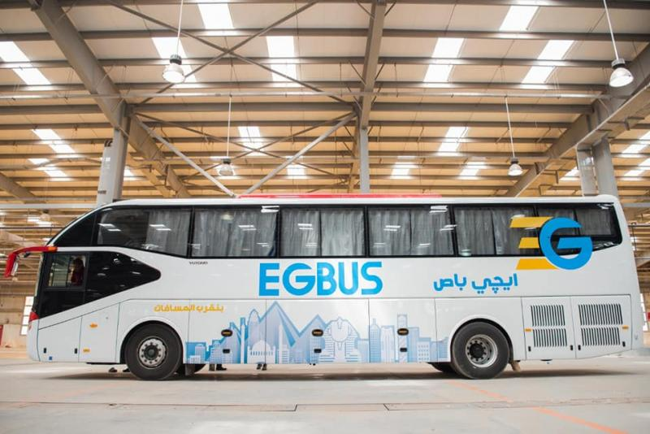

-
بالبلدي : النقل: توفير وسائل نقل جماعي لرواد معرض النقل الذكي TransMEA2023 من القاهرة والمحافظات
أعلنت وزارة النقل أنه تم التنسيق من خلال جهاز تنظيم النقل البري الداخلي والدولي لتوفير وسائل نقل جماعي لنقل رواد معرض ومؤتمر النقل الذكي للشرق الأوسط وافريقيا TransMEA2023 والذي يقام تحت رعاية وتشريف الرئيس عبد الفتاح السيسي رئيس الجمهورية في الفترة من 5-8 نوفمبر 2023. …
-
 توفير أتوبيسات بالقاهرة والمحافظات لنقل رواد معرض TransMEA2023
أعلنت وزارة النقل، توفير وسائل نقل جماعي، لنقل رواد معرض ومؤتمر النقل الذكي للشرق الأوسط وأفريقيا TransMEA2023، المقام تحت رعاية وحضور الرئيس عبد الفتاح السيسي، خلال الفترة من 5-8 نوفمبر الجاري..…
-

تسر الشركة القابضة للنقل البحرى والبرى وشركات الركاب التابعة لها توفير اتوبيسات لنقل زائرى المعرض
تزامناً مع اليوم الدولي للمرأة في القطاع البحري ميناء دمياط يتوجه بتكريم عدد من المتميزات من الكوادر النسائية بإدارات الهيئة …
-

اول قطار اقليمي من شبكة القطار الكهربائي السريع واتاحة تفقدها لزائري المعرض
مع بدء العد التنازلي لانطلاق فعاليات الدورة الخامسة للمعرض والمؤتمر الدولي للنقل الذكي والبنية التحتية واللوجيستيات للشرق الاوسط وافريقيا TransMEA2023 النقل : اصطفاف بالساحة الخارجية للمعرض لمشروعات الجر الكهربائي ووسائل النقل الجماعي الحديثة صديقة البيئة أبرزها اول قطار اقليمي من شبكة القطار الكهربائي السريع واتاحة تفقدها لزائري المعرض …
-
ضمن شبكة القطار السريع داخل أرض المعرض قبل انطلاق فعاليات مؤتمر النقل الذكىdesiro HC القطار
وصول القطار DESIRO hc ضمن شبكة القطار السريع داخل ارض المعارض وذلك قبل انطلاق مؤتمر النقل الذكى …